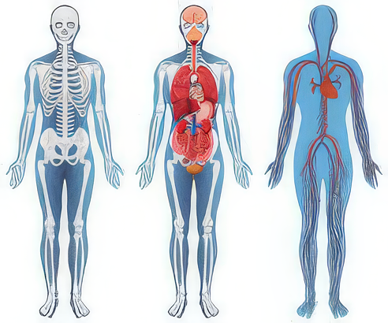

🧠 آناتومی بدن انسان؛ نقشهٔ کامل ساختار بدن

علم آناتومی (Anatomy) به بررسی ساختار بدن انسان و روابط میان اجزای آن میپردازد. این علم از بنیادیترین شاخههای علوم زیستی و پزشکی است و پایهای برای درک عملکرد بدن و دستگاههای مختلف آن به شمار میآید. آناتومی نه تنها در پزشکی، بلکه در فیزیوتراپی، ورزش، هنر، و حتی روانشناسی ورزشی کاربرد دارد.
درک آناتومی به ما کمک میکند بدانیم که هر استخوان، ماهیچه و عضو در کجا قرار گرفته، چه نقشی دارد و چگونه با سایر بخشها هماهنگ میشود. بدون شناخت آناتومی، درک حرکت، تعادل، عملکرد ورزشی و حتی درمان آسیبها تقریباً غیرممکن است.
📘 تعریف و هدف علم آناتومی
واژهٔ "آناتومی" از واژه یونانی “Anatemnein” بهمعنای "بریدن و مشاهدهٔ درون" گرفته شده است. هدف اصلی آن، شناخت دقیق ساختار بدن و ارتباط اجزای مختلف آن مانند استخوانها، عضلات، عروق، اعصاب و اندامهای داخلی است. این شناخت، پایهای برای علوم دیگر مانند فیزیولوژی (عملکرد بدن)، بیومکانیک، و پزشکی بالینی محسوب میشود.
📚 شاخههای اصلی آناتومی
علم آناتومی بسیار گسترده است و در شاخههای مختلفی تقسیم میشود:
- آناتومی عمومی (General Anatomy): بررسی کلی ساختار بدن، بافتها و سلولها.
- آناتومی ناحیهای (Regional Anatomy): مطالعهٔ بدن به بخشهای مختلف مانند سر و گردن، اندام فوقانی، اندام تحتانی و تنه.
- آناتومی سیستماتیک (Systemic Anatomy): مطالعهٔ بدن بر اساس دستگاهها، مانند دستگاه گوارش، تنفس، عصبی و غیره.
- آناتومی سطحی (Surface Anatomy): بررسی شکل ظاهری بدن و نشانههای بیرونی برای تشخیص موقعیت اندامهای داخلی.
- آناتومی میکروسکوپی (Microscopic Anatomy): بررسی سلولها و بافتها با میکروسکوپ (شامل بافتشناسی یا Histology).
- آناتومی رشدی (Developmental Anatomy): مطالعهٔ مراحل رشد بدن از دوران جنینی تا بزرگسالی (Embryology).
🩻 دستگاههای اصلی بدن انسان
بدن انسان از دستگاههای مختلفی تشکیل شده که هرکدام نقش خاصی در حفظ حیات دارند. مهمترین آنها عبارتاند از:
- دستگاه اسکلتی (Skeletal System): شامل استخوانها، مفاصل و رباطهاست که چارچوب بدن را تشکیل میدهند.
- دستگاه عضلانی (Muscular System): از بیش از ۶۰۰ ماهیچه تشکیل شده که باعث حرکت، تعادل و پایداری بدن میشوند.
- دستگاه عصبی (Nervous System): کنترلکنندهٔ اصلی بدن که از مغز، نخاع و اعصاب محیطی تشکیل شده است.
- دستگاه گردش خون (Cardiovascular System): شامل قلب و رگها برای انتقال خون و اکسیژن.
- دستگاه تنفسی (Respiratory System): مسئول ورود اکسیژن و خروج دیاکسیدکربن.
- دستگاه گوارش (Digestive System): تجزیهٔ مواد غذایی و جذب مواد مغذی.
- دستگاه ادراری (Urinary System): تصفیهٔ خون و دفع مواد زائد.
- دستگاه تولید مثل (Reproductive System): مسئول تولید مثل و هورمونهای جنسی.
- دستگاه اندوکرین (Endocrine System): شامل غدد درونریز که ترشح هورمونها را تنظیم میکنند.
- پوست و ضمائم (Integumentary System): شامل پوست، مو و ناخن که محافظ بدن هستند.

💪 اهمیت شناخت آناتومی در ورزش
برای ورزشکاران و مربیان، درک آناتومی اهمیت فراوانی دارد. این دانش به آنها کمک میکند بدانند کدام عضلات در هر حرکت فعال میشوند، چه حرکاتی ممکن است باعث آسیب شوند و چطور میتوانند عملکرد بدن را بهینه کنند. برای مثال، در تمرین اسکوات، آگاهی از عملکرد عضلات چهارسر ران، سرینی و همسترینگ باعث اصلاح فرم حرکت و جلوگیری از آسیب میشود.
روانشناسی ورزشی نیز از آناتومی بهره میبرد؛ زیرا شناخت بدن و حس تسلط بر آن باعث افزایش اعتماد به نفس، تمرکز و آرامش ذهنی در ورزشکار میشود.
🧩 اصطلاحات کلیدی در آناتومی
- Anterior / Posterior: جلو / پشت بدن
- Superior / Inferior: بالا / پایین بدن
- Medial / Lateral: نزدیک به خط میانی / دور از خط میانی
- Flexion / Extension: خم شدن / باز شدن مفصل
- Abduction / Adduction: دور شدن از خط میانی / نزدیک شدن به آن
🌿 در کل میتوانیم با درک کردن آناتومی بدن انسان، ساختار زیباتری برای بدن خود بسازیم!
آناتومی، نقشهای دقیق از بدن انسان است. این علم به ما میآموزد که چگونه بدن کار میکند، چگونه حرکت میکند و چرا گاهی دچار ناهماهنگی یا آسیب میشود. درک درست از آناتومی، پایهای برای سلامت، بهبود عملکرد ورزشی و پیشگیری از آسیبها است. هر ورزشکار، مربی یا درمانگر باید بداند که شناخت بدن، نخستین گام برای درک ذهن و تواناییهای واقعی انسان است.